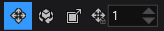
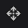
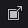
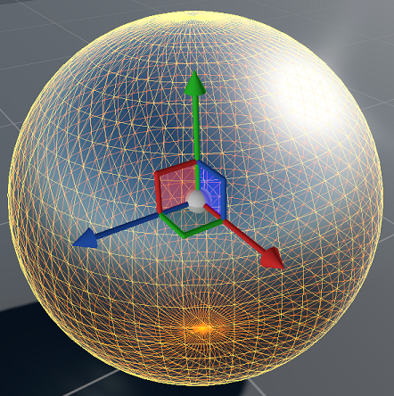
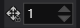
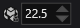
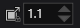

エンティティの管理
初級 レベル デザイナー
ゲームのレベルを構築するには、シーンのエンティティを平行移動 (移動)、回転、サイズ変更する必要があります。これらの操作は変換と呼ばれます。
変換ギズモ
変換ギズモは、シーン エディターのツールバーから選択できます。

または、Space キーを押してギズモ間を切り替えることができます。
次の 3 種類の変換ギズモがあります。
-  平行移動ギズモは、エンティティを移動します。
- 回転ギズモは、エンティティを回転します。
-  拡大縮小ギズモは、エンティティのサイズを変更します。
選択されている変換ギズモは、エンティティの原点に表示されます。

平行移動ギズモ
平行移動ギズモを選択するには、シーン エディターのツールバーで アイコンをクリックするか、W キーを押します。
平行移動ギズモは、シーン内のエンティティを、選択された軸に沿って移動 (平行移動) します。
- X 軸に沿ってエンティティを移動するには、赤の矢印でエンティティをドラッグします。
- Y 軸に沿って (上下に) エンティティを移動するには、緑の矢印でエンティティをドラッグします。
- Z 軸に沿ってエンティティを移動するには、青の矢印でエンティティをドラッグします。
- 3D で自由にエンティティを移動するには、中央の球体でエンティティをドラッグします。
回転ギズモ
回転ギズモを選択するには、シーン エディターのツールバーで アイコンをクリックするか、E キーを押します。
回転ギズモは、シーン内のエンティティを、選択された軸を中心にして回転します。
- X 軸を中心にしてエンティティを回転するには (ピッチ)、赤のリングでエンティティをドラッグします。
- Y 軸を中心にしてエンティティを回転するには (ヨー)、緑のリングでエンティティをドラッグします。
- Z 軸を中心にしてエンティティを回転するには (ロール)、青のリングでエンティティをドラッグします。
拡大縮小ギズモ
拡大縮小ギズモを選択するには、シーン エディターのツールバーで アイコンをクリックするか、R キーを押します。
拡大縮小ギズモは、1 つの軸に沿って (エンティティの 1 方向への「伸長」または「圧縮」)、またはすべての軸に沿って (エンティティの形状を変えずに拡大または縮小)、エンティティのサイズを変更します。
- X 軸の方向にエンティティのサイズを変更するには、赤のリングでエンティティをドラッグします。
- Y 軸の方向にエンティティのサイズを変更するには、緑のリングでエンティティをドラッグします。
- Z 軸の方向にエンティティのサイズを変更するには、青のリングでエンティティをドラッグします。
- すべての軸の方向にエンティティのサイズを変更するには、中央の球体でエンティティをドラッグします。
Note
拡大縮小ギズモは、ローカル座標系 (後述) でのみ動作します。拡大縮小ギズモを選択すると、ローカル座標に切り替わります。
ギズモの座標系を変更する
ギズモ座標の動作を変更できます。
- ギズモ座標を変更するエンティティを選択します。
- シーン エディターのツールバーで、使用する座標系を選択します。
| 座標系 | 機能 |
|---|---|
| ワールド座標 | 変換にワールド座標を使用します。X、Y、Z 軸はすべてのエンティティについて同じです。 |
| ローカル座標 | 変換にローカル座標を使用します。軸の向きは、選択されているエンティティと同じ方向になります。 |
| カメラ座標 | 変換に現在のカメラ座標を使用します。軸の向きは、エディターのカメラと同じ方向になります。 |
変換をグリッドにスナップする
変換をグリッドに「スナップ」できます。つまり、エンティティに適用する変換の大きさを、指定した値の最も近い倍数に丸めることができます。たとえば、回転のスナップ値を 10 に設定した場合、エンティティは 10 の倍数 (0、10、20、30 など) で回転します。
シーン ビューのツールバーで、ギズモごとにスナップ値を変更できます。スナップ値は、シーン内のすべてのエンティティに適用されます。次に例を示します。
| アイコン | 機能 |
|---|---|
|  | 平行移動を 1 の倍数にスナップします |
|  | 回転を 22.5 の倍数にスナップします |
|  | 拡大縮小を 1.1 の倍数にスナップします |